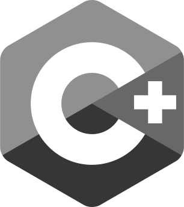
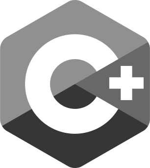

Reference Implementation
- Generic: User - Item - Room
- JSON: Distributed async. database
- HTTP:
- - Triplex TCP (2 sockets)
- - Comet-Stream / Server-Sent Events
- - Traverses all firewalls
- Async. hot-deploy to the global cluster.
- Completely Atomic Parallel Non-Blocking Async.
- Global 100% Read Uptime (registered users
will always be able to login and play) - Low internal latency: statistics (Raspberry Pi 2)
- Source Available: https://github.com/tinspin/fuse
- Integrated Forum: http://talk.binarytask.com
- Physics: Client predicts everything
- Movement: Events instead of ticks


- 150 concurrent users ~30% CPU on AWS T2 Micro (3 ECU burst?)
- Then we upgraded because CPU credits were
running low and not replenishing at night: - 200 concurrent users ~12.5% CPU on AWS T2 Medium (10 ECU burst?)
- 250 concurrent users ~15% CPU on AWS T2 Medium (10 ECU burst?)
- 450 concurrent users ~25% CPU on AWS T2 Medium (10 ECU burst?)
- 450 concurrent users ~40% CPU on AWS M4 Large (6.5 ECU)
- At peak the 3x node intercontinental cluster ran with
1100 concurrent players for ~20$/day. - This was during a 3 day surge where we added 50.000 players
which meant a revenue of ~50.000$/day. - When at 450 concurrent users each server receives 2.000
and sends 100.000 move messages per second while
keeping internal latency low enough for FPS games. - scales linearly / zero io-wait
- 100% stable / zero leakage
- Scalable - 1000 mess.in+out/s on Raspberry Pi 1 / Distr. Async. DB
- Simple - Virtual Host Hotdeploy / HTTP JSON File DB / HTTP API
- Stable - Infinite Uptime / No Maintenance / 8 Years Old
- Secure - One-Time Salt Password Hash Login
- One process for C#, C++ and HTML5 cross play, website and database!
- 200KB total size (excl. Java)
- Global 100% Read Uptime
- Commercial License starting at 20$/Month
- 759 out of 205.875 customers refunded because their antivirus blocks the pull HTTP stream
- You need large database hard-drives; Meadow uses 100KB per user, also inodes run out
before disk space if you don't configure the /app mount with 'mkfs.ext4 -T small' - Peak garbage collect is 7ms once per minute on AWS T2 Micro instance
- Update 2020-11-02: Preview Teaser!
- Update 2020-12-02: A bold prediction!
- Update 2020-12-04: Integrate drag'n drop scripting?
- Khronos (OpenGL/AL and Collada) C+ (C syntax compiled with g++/cl.exe) 3D Engine.
- Gumroad License, Github Sponsorship and Itch Prepaid & Subscription.


 


-
Rendered vertex skinned characters at 60 FPS and GPU 100% saturated:
GW = x Per GPU Watt.Device GW CGW C% Total Year NM GL 400x 3770S/4000HD 57x 11x 1% 35W 2012 22 3 100x Raspberry 4 100x 20x 45% 5W 2019 28 ES 3 600x Jetson Nano 2GB 150x 60x 65% 10W 2020 16 ES 3 ?x Human Brain ?x ?x ?% 12W ! ? ? 3.500x 6600/1050Ti 233x 166x 100% 105W 2016 14 3
CGW = x Per CPU + GPU Watt.
C% = Render single CPU core usage. - Physics: Distributed collision, server validation on disagreement
and/or random 3rd party authority selection, report election
for performance burst. - Movement: Polar ADC - DAC compression for input over network.
Delay precision correction until delta is (s)low enough.
- None of the competition has an integrated
async-to-async distributed database or web
server that can scale across continents
or hot-deploy in under 2 seconds. - SpatialOS (Java, uses netty/akka) 80MB total size = x400 and now military only?!
- Goto & Play (Java)
None of the systems below can scale on
multiple cores across the same room
instance:- Much Different (C#) Defunct
- Exit Games (C++/C#) Only Windows
- Nakama (Go)
-
Server
1) Install JDK (See below for my own backups of free Java) and Ant, add their /bin folders to OS path.
2) Download/clone fuse-master from github, all instructions below are from inside the fuse-master folder.
Local (single developer; testing, learning, prototype)
3a) Start the server with run.sh or run.bat.
3b) Run "ant local".
By default the project will use root.rupy.se as database.
Remote (global cluster, multiple developers; separate domains for test and live etc.)
4a) Register on binarytask. Pick any available <name>.binarytask.com or use your own domain.
4b) Edit the root property (at the top) in build.xml to the domain you registered.
4c) Replace ${fuse.rupy.se} in the remote target (at the bottom) with the password.
4d) Run "ant remote".
By default the project will use base.binarytask.com as database.
Client
5) Copy Fuse.cs/Fuse.cpp to your client project.
6) Edit host and port depending on local/remote.

- Dedicated: Minimum equivalent of two micro instances, last free Oracle Java (8u181):
- jdk-linux-arm32.tar / jdk-linux-arm64.tar
- jdk-linux-x64.rpm
- jdk-linux-x64.tar / jdk-windows-x64.exe
- jre-linux-x64.tar / jre-windows-x64.tar
- "Cloud": We host and maintain on globally redundant hybrid cloud: host.binarytask.com
- Taipei & Hong Kong in Asia
- Omaha & Kansas City in US
- Zürich & Berlin in Europe
- You have to show the logo on startup. (also availiable with
white outline: )
) - You have to sponsor my fuse tier on gumroad (according
to your entire company structures yearly revenue) during the time
you are using this commercially. - Last but not least the .html files (including content in them) are
proprietary and cannot be used commercially as is, from the play.html
you can reuse the platform specific javascript though!
- game_networking_json_vs_custom_binary_protocol_over_TLS/TCP
- why_do_game_developers_use_udptcp_ports_that_are_not_open_by_default?